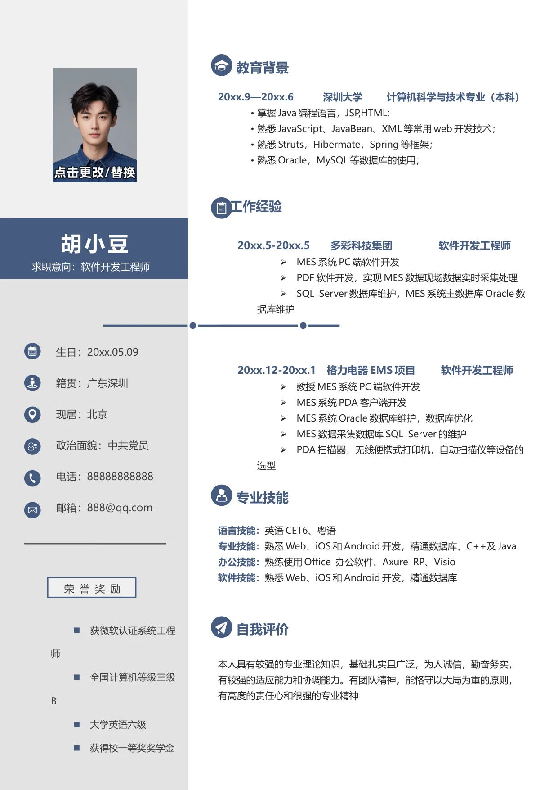

获微软认证系统工程
师
全国计算机等级三级
B
大学英语六级
获得校一等奖奖学金
20xx.5-20xx.5 多彩科技集团 软件开发工程师
•
MES 系统PC 端软件开发
•
PDF 软件开发，实现MES 数据现场数据实时采集处理
•
SQL Server 数据库维护，MES 系统主数据库Oracle 数
据库维护
20xx.12-20xx.1 格力电器EMS 项目 软件开发工程师
•
教授MES 系统PC 端软件开发
•
MES 系统PDA 客户端开发
•
MES 系统Oracle 数据库维护，数据库优化
•
MES 数据采集数据库SQL Server 的维护
•
PDA 扫描器，无线便携式打印机，自动扫描仪等设备的
选型
语言技能：
英语CET6、粤语
专业技能：
熟悉Web、iOS 和Android 开发，精通数据库、C++及Java
办公技能：
熟练使用Office 办公软件、Axure RP、Visio
软件技能：
熟悉Web、iOS 和Android 开发，精通数据库
专业技能
求职意向：软件开发工程师
胡小豆
教育背景
20xx.9—20xx.6 深圳大学 计算机科学与技术专业（本科）
•
掌握Java 编程语言，JSP,HTML;
•
熟悉JavaScript、JavaBean、XML 等常用web 开发技术；
•
熟悉Struts，Hibermate，Spring 等框架；
•
熟悉Oracle，MySQL 等数据库的使用；
生日：20xx.05.09
籍贯：广东深圳
现居：北京
政治面貌：中共党员
电话：88888888888
邮箱：888@qq.com
自我评价
本人具有较强的专业理论知识，基础扎实且广泛，为人诚信，勤奋务实，
有较强的适应能力和协调能力。有团队精神，能恪守以大局为重的原则，
有高度的责任心和很强的专业精神
工作经验
荣 誉 奖 励